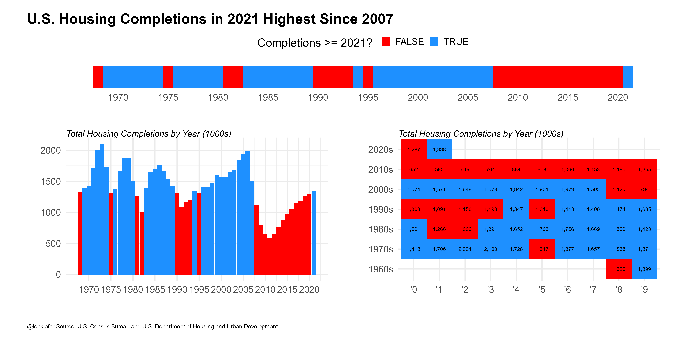
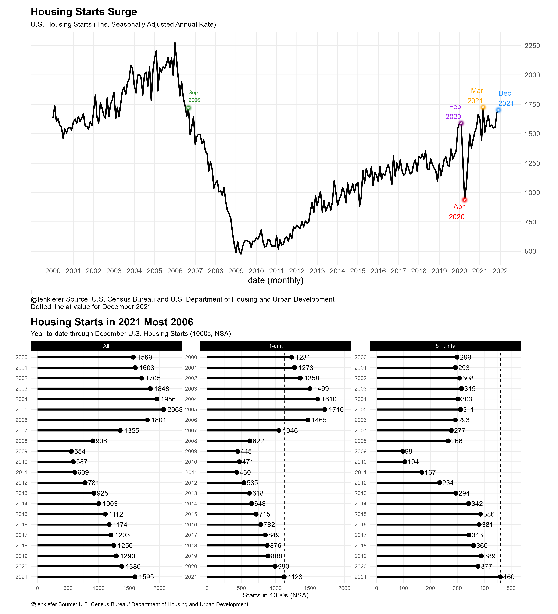

Let’s start off the 2022 blog year with some housing starts charts. Well first, we’ll begin with completions, but then end with starts.
Today the U.S. Census Bureau released estimates for residential construction through December 2021. Using those data I made a chart:

This chart shows total housing completions by calendar year in the United States from 1968-2021. US housing completions in 2021 were the highest since 2007, but only higher than 9 of the 40 years from 1968-2007.
My team has written a lot about the U.S. housing shortage that has resulted from a lack of building since the Great Recession. Our research was even picked up in the Economist.
Is housing construction ever going to catch up? Well it is trending higher. In the same data release that gave us completions we also get housing starts. I made a composite chart showing the trend for total U.S. housing starts at a seasonally adjusted annual rate, and the 12-month total of starts through December. I broke out the 12-month total by all, 1-unit and 5+ unit properties.

Starts have been trending higher. In December they were about as high as they were in September of 2006 (when the trend was in the opposite direction). Housing starts will need to maintain momentum to fill in the substantial housing deficit facing the US. At the start of 2022, builders seem to be set to get to work on digging us out of that hole.
R code for charts
R code for these charts is below.
First Chart
library(extrafont)
library(data.table)
library(tidyverse)
library(patchwork)
library(scales)
library(ggfx)
# make a chart theme
theme_len <- function(font="Arial", bs=24,...){
theme_minimal(base_size=bs,base_family=font,...) %+replace%
theme(plot.caption=element_text(hjust=0,size=rel(0.5)),
plot.title=element_text(size=rel(1.25),face="bold",hjust=0,
margin=margin(0,0,10,0)),
plot.subtitle=element_text(face="italic",hjust=0
,size=rel(0.75)
),
plot.background=element_rect(fill="white",color=NA),
panel.background=element_rect(fill="white",color=NA),
plot.margin=margin(1,1,1,1,"cm")
)
}
# load residential construction data
df <- tidyquant::tq_get("COMPUTNSA",get="economic.data",from="1968-01-01") %>%
mutate(decade:= paste0(year(date) %/% 10, "0s"),
year=year(date),
yy=substr(year,4,4))
dfc <- group_by(df,year,yy,decade) %>%
summarize(hc=sum(price)) %>%
ungroup()
g1<-
ggplot(data=dfc,aes(x=paste0("'",yy), y=decade,
fill=hc>=last(hc), label=comma(hc,1)))+
geom_tile()+
geom_text()+
theme_len()+
theme(legend.position="none")+
scale_fill_manual(values=c("red","dodgerblue"),
name="Completions >= 2021? ")+
labs(x="",y="",
subtitle="Total Housing Completions by Year (1000s)")
g2 <-
ggplot(data=dfc,
aes(x=year, y=hc,fill=hc>=last(hc)))+
geom_col(position = position_dodge(width = 0.75),width=0.95)+
theme_len()+
scale_x_continuous(breaks=seq(1970,2020,5),labels=round(seq(1970,2020,5)))+
scale_fill_manual(values=c("red","dodgerblue"),
name="Completions >= 2021? ")+
theme(legend.position="none",
plot.title=element_text(size=rel(0.1)))+
labs(x="",y="",
subtitle="Total Housing Completions by Year (1000s)")
g3 <- ggplot(data=dfc,
aes(x=year, y=1,fill=hc>=last(hc)))+
geom_tile(alpha=1)+
theme_len()+theme(legend.position="top",axis.text.y=element_blank(),
panel.grid=element_blank())+
scale_x_continuous(breaks=seq(1970,2020,5),labels=round(seq(1970,2020,5)))+
labs(y="",x="")+
scale_fill_manual(values=c("red","dodgerblue"),
name="Completions >= 2021? ")
layout <- c("AA
BC
")
g3t <- g3+theme(plot.margin=margin(0,0,0,0))
g3t+g2+g1+
plot_layout(design=layout, heights=c(1,6))+
plot_annotation(#subtitle="Total Housing Completions by Year",
title="U.S. Housing Completions in 2021 Highest Since 2007",
caption="@lenkiefer Source: U.S. Census Bureau and U.S. Department of Housing and Urban Development",
theme=theme_len())Second Chart
df2 <- tidyquant::tq_get("HOUST",get="economic.data",from="1900-01-01")
gline <-
ggplot(data=filter(df2,year(date)>=2000), aes(x=date,y=price))+geom_line()+
geom_line( color="black",size=1.05)+
theme_minimal(base_size=14)+
#darklyplot::theme_dark2(base_family="Arial")+
theme(plot.caption=element_text(hjust=0))+
theme(plot.title=element_text(face="bold",family="Arial"))+
scale_y_continuous(position="right",breaks=seq(0,2500,250)) +
#scale_x_date(date_labels="%Y", date_breaks="5 year" ) +
#geom_rug(data=.%>% filter(price>=last(price)),sides="b",color="dodgerblue" )+
#with_outer_glow(geom_hline(data= .%>% filter(date==max(date)),
# color="white",size=0.5,alpha=0.8,linetype=2,
# aes(yintercept=price)),
# colour="lightblue",sigma=0,expand=0)+
geom_hline(data=.%>% filter(date==max(date)),linetype=2,color="dodgerblue",
aes(yintercept=price))+
with_outer_glow(geom_point(data=.%>% filter(date==max(date)),
color="white",size=1,alpha=0.8),
colour="dodgerblue",sigma=5,expand=10)+
geom_text(data=.%>% filter(date==max(date)),color="dodgerblue",
size=4,hjust=0,
nudge_y= 100,
aes(label=format(date,"%b\n%Y")))+
with_outer_glow(geom_point(data=.%>% filter(date=="2020-04-01"),
color="white",size=1,alpha=0.8),
colour="red",sigma=5,expand=10)+
geom_text(data=.%>% filter(date=="2020-04-01"),color="red",
size=4,hjust=1,
nudge_y=-100,
aes(label=format(date,"%b\n%Y")))+
with_outer_glow(geom_point(data=.%>% filter(date=="2020-02-01"),
color="white",size=1,alpha=0.8),
colour="purple",sigma=5,expand=10)+
geom_text(data=.%>% filter(date=="2020-02-01"),color="purple",
size=4,hjust=1,
nudge_y=100,
aes(label=format(date,"%b\n%Y")))+
with_outer_glow(geom_point(data=.%>% filter(date=="2021-03-01"),
color="white",size=1,alpha=0.8),
colour="orange",sigma=5,expand=10)+
geom_text(data=.%>% filter(date=="2021-03-01"),color="orange",
size=4,hjust=1,
nudge_y=100,
aes(label=format(date,"%b\n%Y")))+
with_outer_glow(geom_point(data=.%>% filter(date=="2006-09-011"),
color="white",size=1,alpha=0.8),
colour="forestgreen",sigma=5,expand=10)+
geom_text(data=.%>% filter(date=="2006-09-01"),color="forestgreen",
size=3,hjust=0,
nudge_y= 100,
aes(label=format(date,"%b\n%Y")))+
labs(x="date (monthly)", y="",
title="Housing Starts Surge",
subtitle="U.S. Housing Starts (Ths. Seasonally Adjusted Annual Rate)",
#subtitle="shaded region denotes confidence interval",
caption=paste0("\n@lenkiefer Source: U.S. Census Bureau and U.S. Department of Housing and Urban Development\nDotted line at value for ",
format(max(df2$date),"%B %Y")
#,"\nTicks at bottom indicate months where starts >= last value"
))+
scale_x_date(breaks=seq.Date(as.Date("2000-01-01"),as.Date('2022-01-01'), by= "1 year"),
date_labels="%Y")+
theme(plot.caption=element_text(hjust=0,size=rel(0.8)),
panel.grid.minor=element_blank(),
panel.background=element_rect(fill="white",color=NA),
plot.background=element_rect(fill="white",color=NA),
plot.subtitle=element_text(size=rel(0.8)))
df3 <- tidyquant::tq_get(c("HOUSTNSA","HOUST1FNSA","HOUST5FNSA"),get="economic.data",
from="1000-01-01")
df3 <- mutate(df3,month=month(date),year=year(date),
mname=fct_reorder(format(date,"%b"),-month(date)))
df3 <- group_by(df3,year,symbol) %>% mutate(cs=cumsum(price)) %>% ungroup %>%
mutate(varname=case_when(symbol=="HOUSTNSA"~"All",
symbol=="HOUST1FNSA"~"1-unit",
symbol=="HOUST5FNSA"~"5+ units")) %>%
mutate(varname=fct_relevel(varname, c("All","1-unit","5+ units")))
mdf <- data.frame(varname=levels(df3$varname),
cs=c(2250,2000,425))
mdf <- filter(df3,date==max(date))
mdf$cs= c(2250,2000,425)
gseg <-
ggplot(data=filter(df3,symbol %in% c("HOUSTNSA","HOUST1FNSA","HOUST5FNSA") &
month==12 & year >1999),
aes(x=cs,y=factor(year,levels=seq(2021,2000,-1)),
group=varname, label=paste(" ",comma(round(cs,0)))))+
geom_vline(data= .%>% filter(year==2021), aes(xintercept=cs),linetype=2,color="black")+
geom_vline(data= .%>% filter(year==2021),
aes(xintercept=ifelse(symbol=="HOUST5FNSA",cs+50,cs+300)),linetype=2,color="transparent")+
facet_wrap(~varname,scales="free")+
geom_segment(size=1.5,aes(xend=0,yend=factor(year)))+
geom_point(data=mdf,color="transparent")+
geom_point(size=3)+
theme_minimal()+
geom_text(hjust=-0.25,aes(label=round(cs,0)),color="black")+
theme()+
labs(y="",x="Starts in 1000s (NSA)",
title="Housing Starts in 2021 Most 2006",
subtitle="Year-to-date through December U.S. Housing Starts (1000s, NSA)",
caption="@lenkiefer Source: U.S. Census Bureau/ Department of Housing and Urban Development")+
theme(plot.caption=element_text(hjust=0),
plot.title=element_text(face="bold",size=rel(1.5)),
panel.background=element_rect(fill="white",color=NA),
plot.background=element_rect(fill="white",color=NA),
strip.background=element_rect(fill="black"),
strip.text=element_text(color="white"))
# stack them
gline / gseg